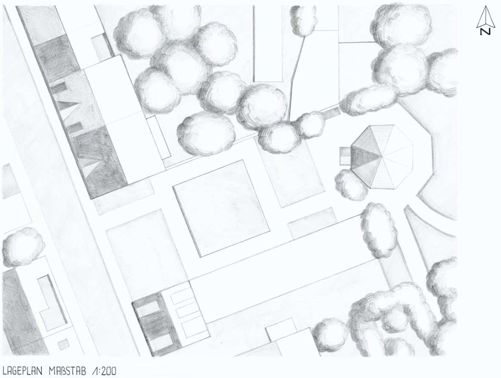
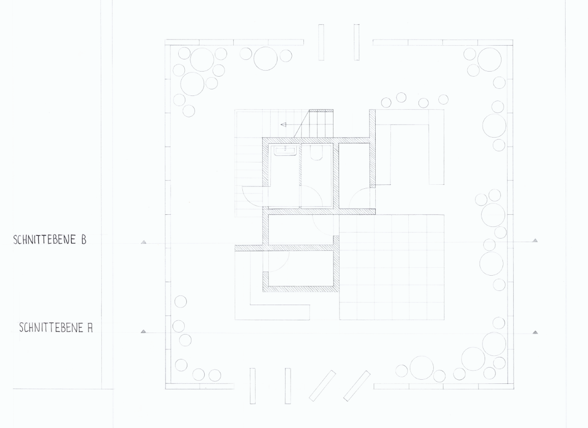
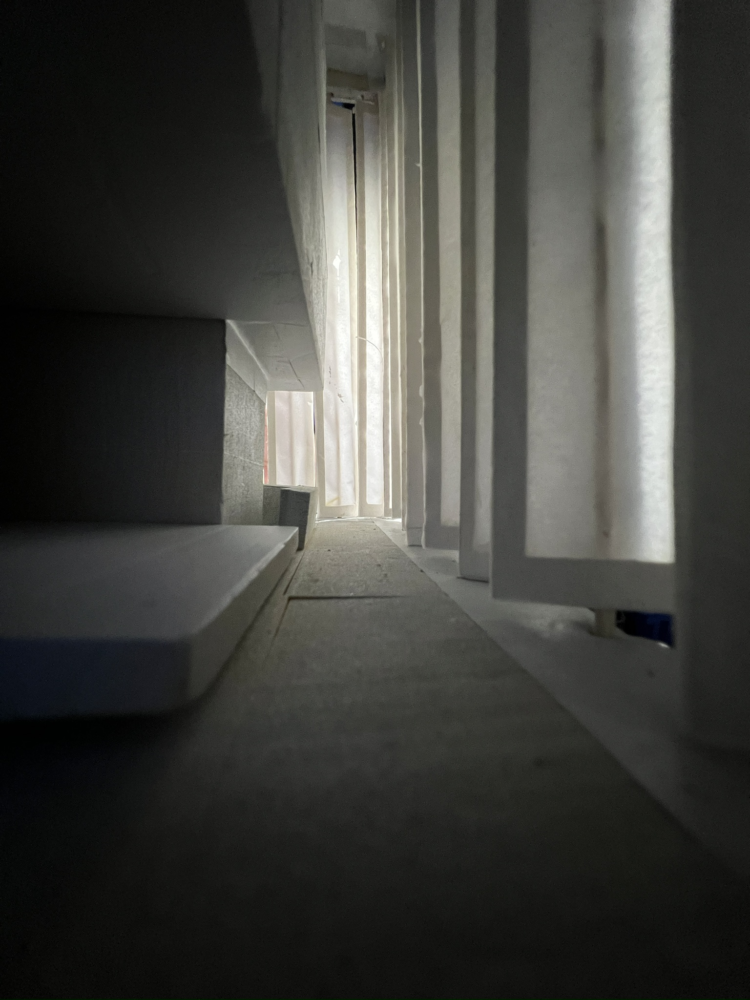
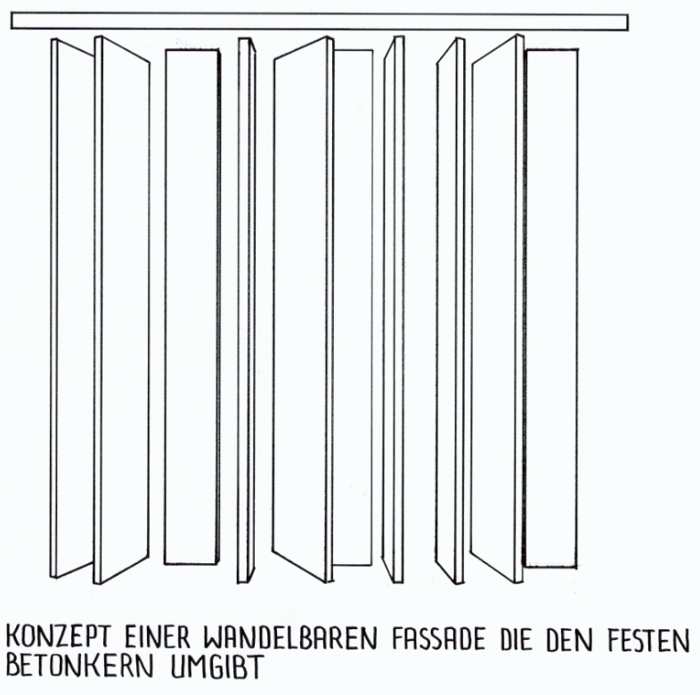
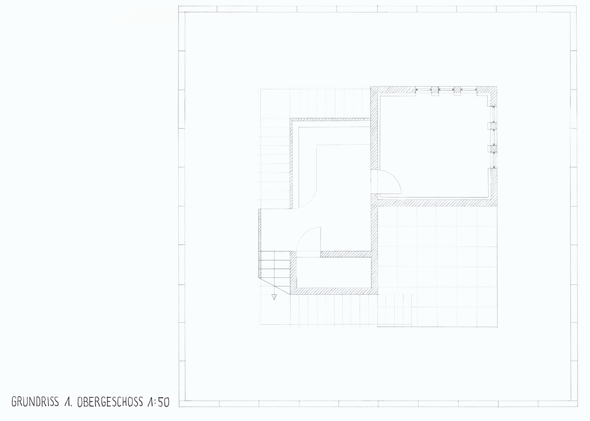
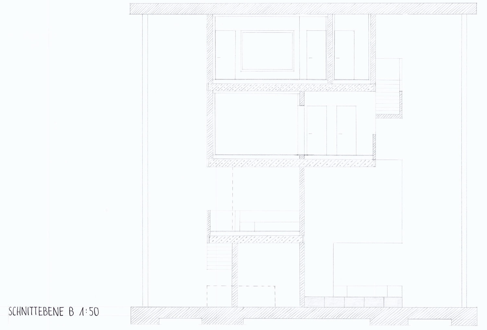
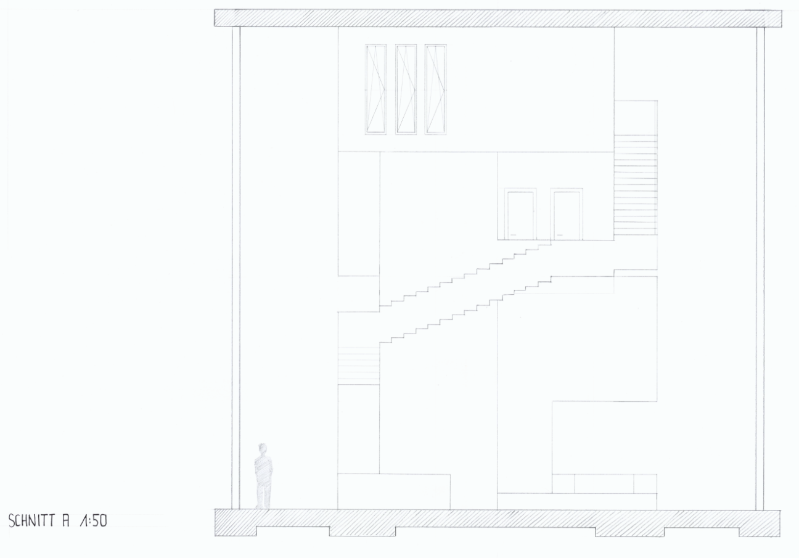

KLANGKÖRPER

In Darmstadt’s Martinsviertel district, the ‘Klangkörper’ fills an vacant plot and, with the Jazz Foyer, creates a new space for music, socialising and exchange.
The architecture follows the inner logic of jazz: a clearly defined theme forms the starting point for spatial and programmatic improvisation. At the centre is a compact concrete core that houses the building’s functional spaces – rehearsal rooms and a recording studio. The foyer develops around this solid core as an open, adaptable space.
A flexible louvre façade makes it possible to continuously alter the boundary between inside and outside. Depending on its use, the foyer can be interpreted as a sheltered interior space or as an extension of the public realm. The building thus responds directly to its surroundings and to the various situations within the venue.
Like a jazz piece, the design combines structure and improvisation: the concrete core forms the constant theme, whilst the foyer unfolds freely around it. The minimalist design language deliberately takes a back seat, creating space for what takes centre stage – the music.







RELATED PROJECTS
5. Semester
TEEGARTEN
Details
TEEGARTEN
Details

6. Semester
VERNÄHT
Details
VERNÄHT
Details